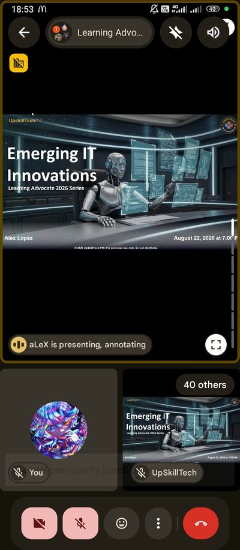
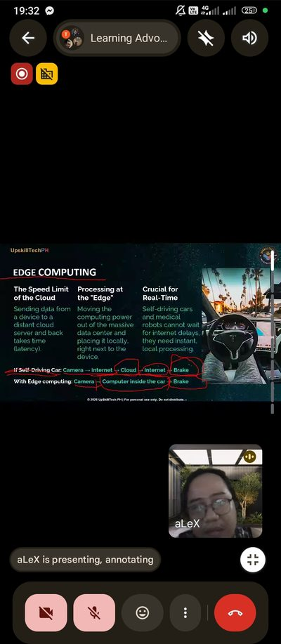
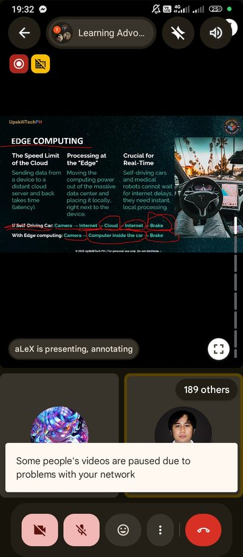
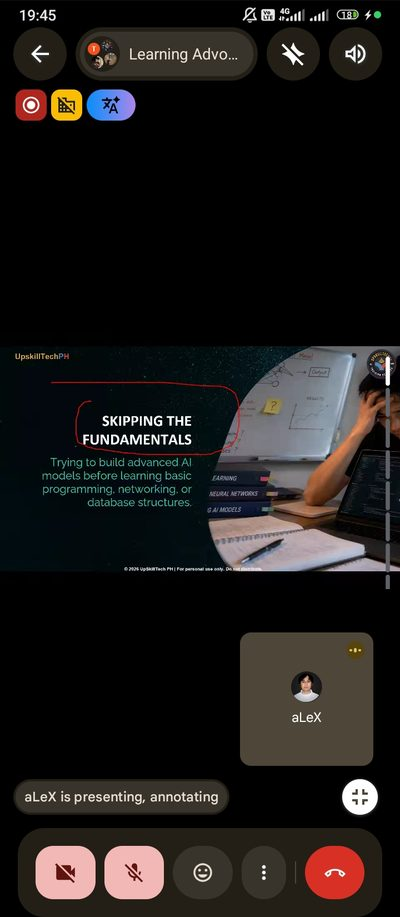
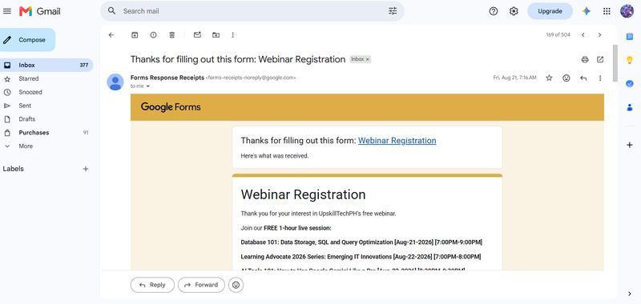

Learning Advocate 2026 Series: Emerging IT Innovations
A one-hour UpskillTechPH webinar on emerging technologies, from AI and Web3 to edge computing, and on how students should learn them.
- Date
- August 22, 2026
- Time
- 7:00 – 8:00 PM
- Duration
- 1 hour
- Speaker
- Alexander Lopez
- Organizer
- UpskillTechPH Training Services
- Platform
- Google Meet (online)
- Credential ID
- e4dcaaddc88fc29bee5e44e333a84a23
Certificate of participation

Narrative report
On August 22, 2026, I joined “Emerging IT Innovations,” part of UpskillTechPH Training Services’ Learning Advocate 2026 Series, on Google Meet from 7:00 to 8:00 PM. I registered through the organizer’s Google Form the day before and joined a few minutes early. The session was led by Mr. Alexander Lopez, the founder of UpskillTechPH, and by the middle of the talk nearly two hundred participants were in the call.
One topic that stood out was edge computing. Sending data from a device to a distant cloud server and back takes time, so edge computing moves the processing next to the device. The speaker used a self-driving car to show why this matters: without it, the camera’s data has to travel through the internet to the cloud and back before the car can brake; with it, a computer inside the car makes the decision on the spot.
Self-driving cars and medical robots cannot wait for internet delays; they need instant, local processing.
He also warned about two habits that slow students down: chasing the hype, or jumping from AI one week to Web3 the next without mastering anything, and skipping the fundamentals, or building advanced AI models before learning programming, networking and databases. As a System Administration and Maintenance student, I took it as a reminder that the basics we study are what these new technologies run on.
Photo documentation








Proof of registration

